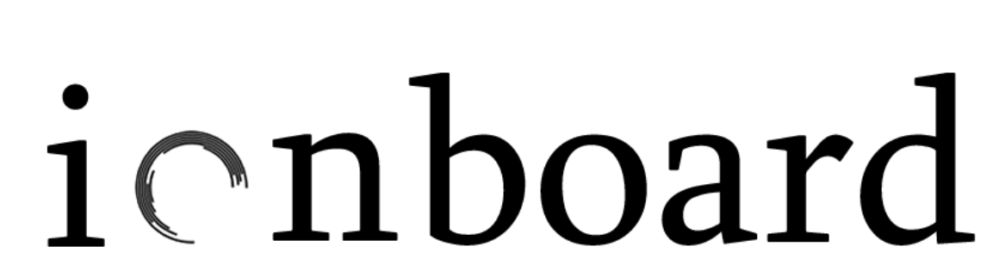
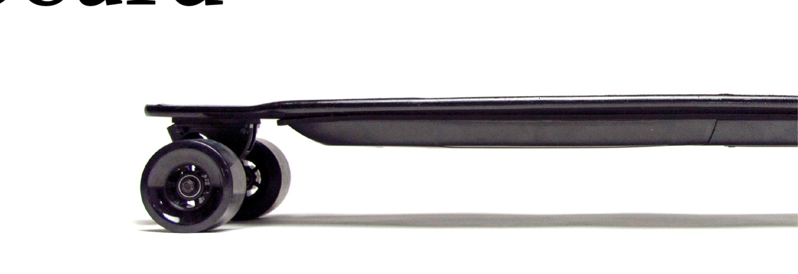
Kate Xu, 2017–2018
Electric Skateboard | Start-up Company
Consumer product | Hardware
My Role: Design & Branding
Impact:
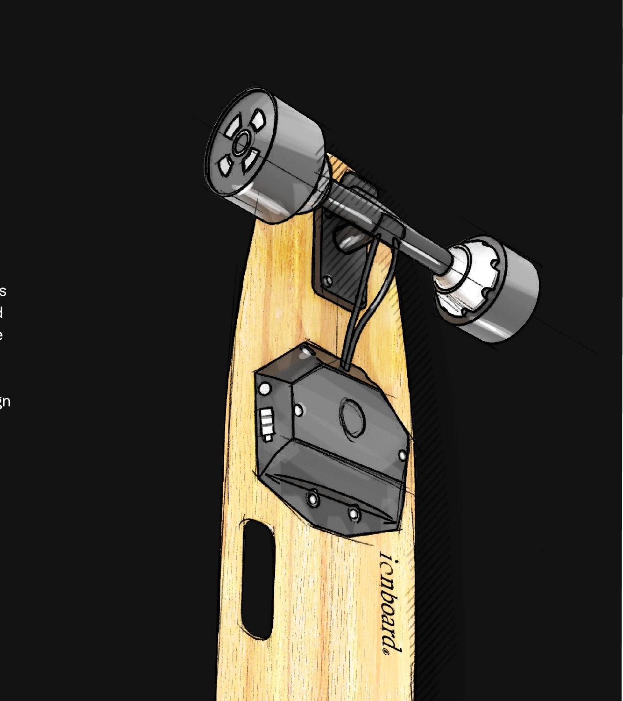
As students, we were surrounded by our most valuable product research resources—our peers, campus influencers, everyday commuters, and the community around us. We observed how people studied, moved, and spent their days, and used those insights to continuously shape the product around what people actually wanted. With support from our accelerator and access to an expanding network, we turned the resources around us into opportunities to learn faster, validate earlier, and design with real user needs at the center.
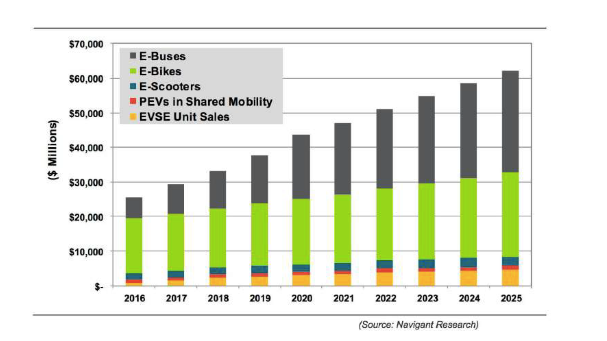
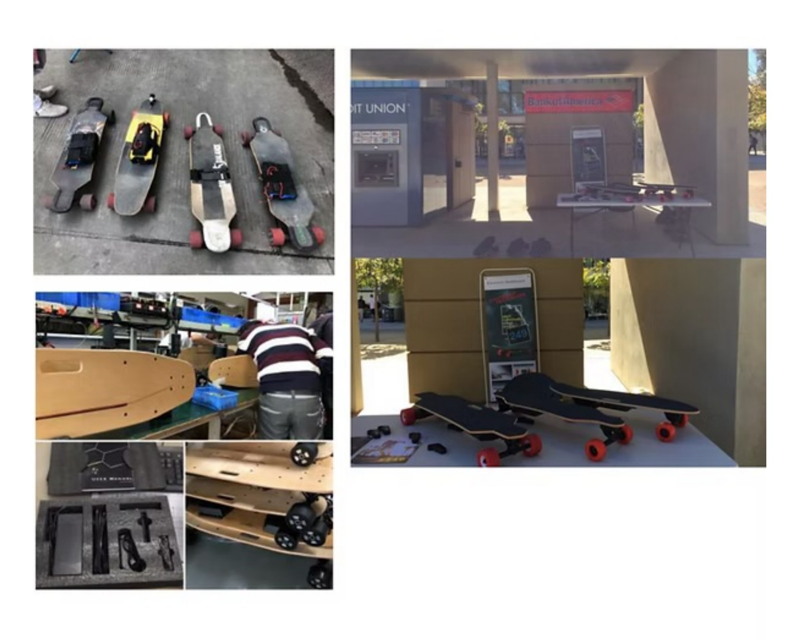
Start where we know best
We were students, skateboarders, and part of the campus community ourselves.
So when we started Ionboard, campus was our first market—and our greatest resource.
We knew the environment, the people, and how they moved. That gave us a unique opportunity to get close to our users, observe their routines, and learn directly from them.
We started where we were, execute fast and gather real world data to direct the following design.
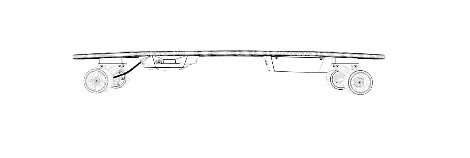
▢ Findings sourced from user interviews
Founders shared the student demographic and observed daily campus mobility firsthand.
50+
in-person interviews
Two differentiators stood out:
Boards placed with campus influencers built early momentum.
Addictive fun meets rugged commuter utility.
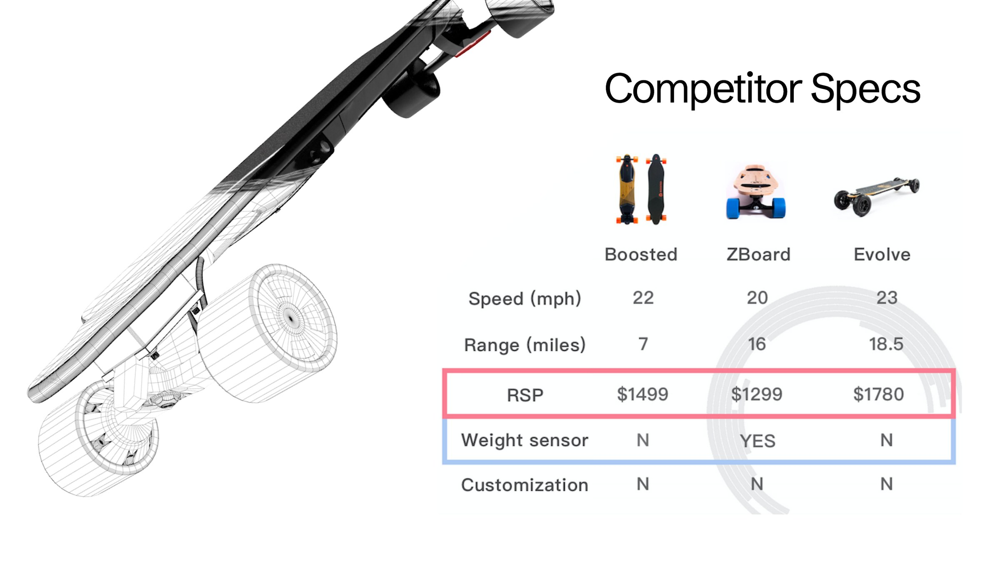
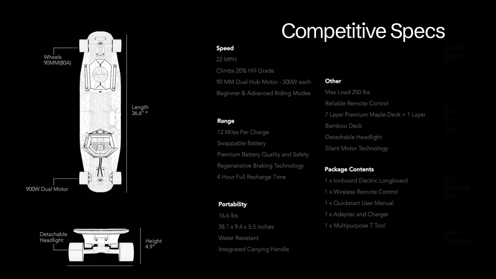
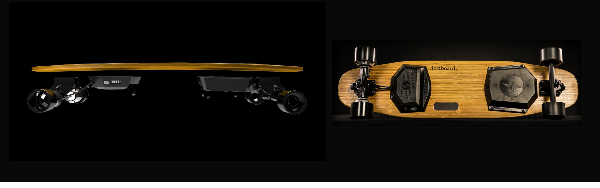
After analyzing competitors like Boosted Board, ZBoard, and Evolve, we saw an opportunity to create a visual identity of our own.
We chose a natural bamboo bottom with a polished, subtle finish to give Ionboard a more urban, modern, and understated character—Refined, understated, and quietly sophisticated, and intentionally different from the louder aesthetics in the market.
The goal was to create a distinctive visual memory: a look that felt unmistakably Ionboard in a buyer’s mind.
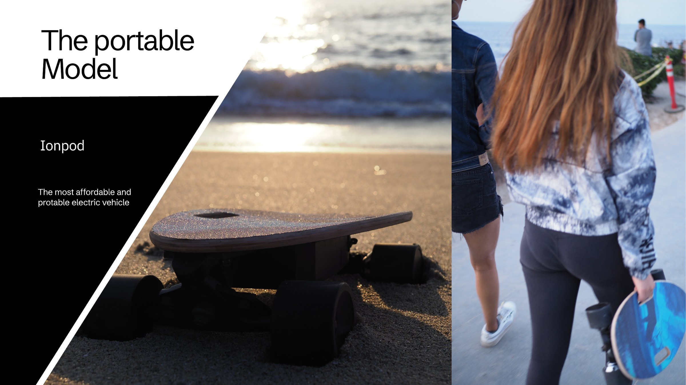
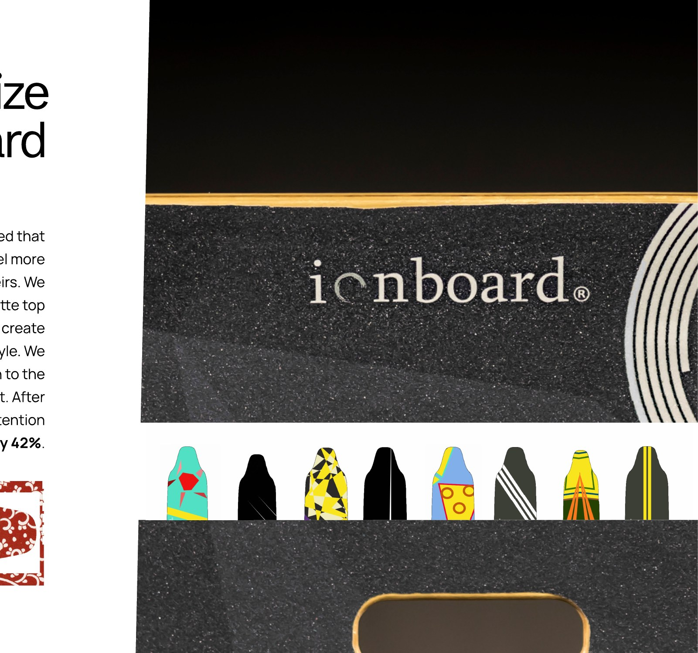
Through user interviews, we learned that riders wanted their boards to feel more personal and uniquely theirs. We introduced customizable matte top covers, giving users the freedom to create a board that reflected their own style. We then added a customization section to the website to test engagement. After launching the feature, website retention increased by 42%.
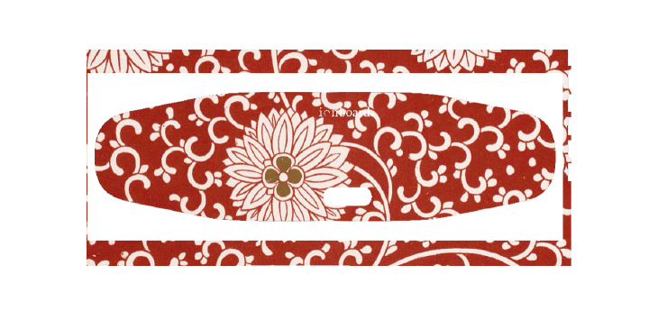
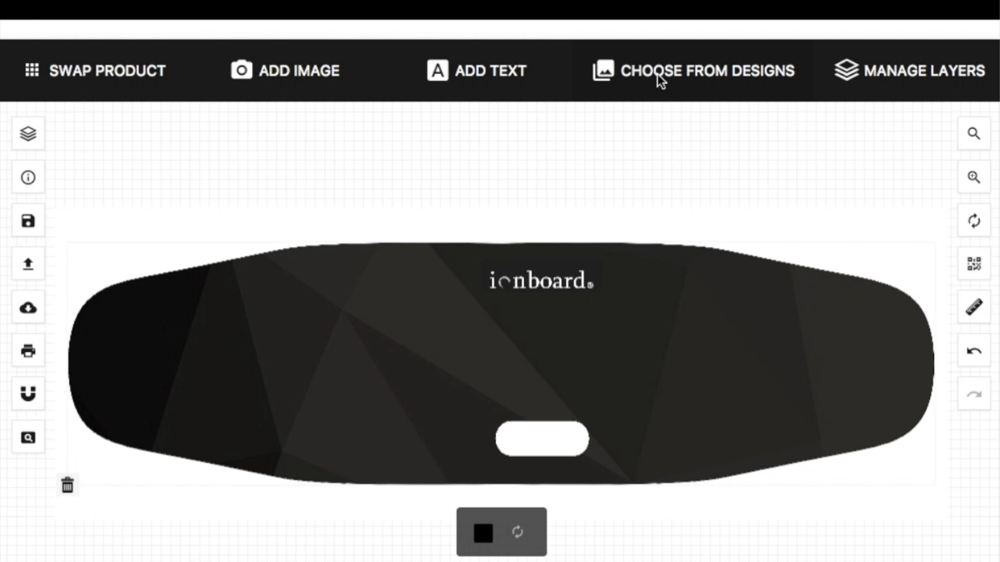
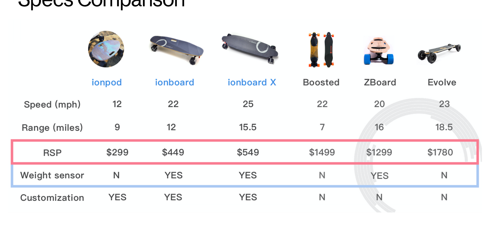
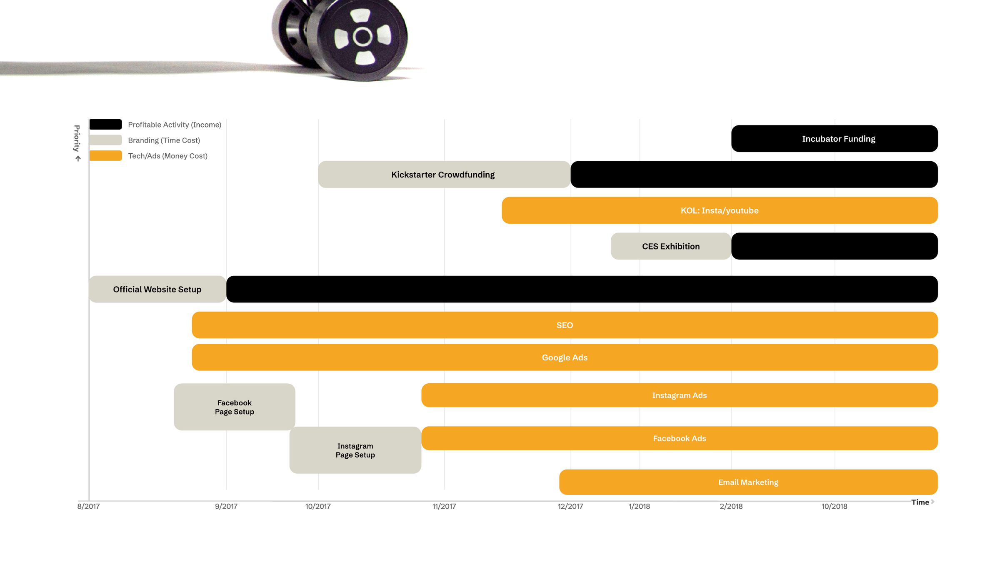
This project taught me that great design must be grounded in business law, manufacturing risks, and market timing.
I learned that once a brand reaches the “majority,” its value shifts from just a “product” to a connection between people and resources.
Analyzing ad performance daily with engineers sharpened my ability to make proactive design decisions based on user behavior—a skill I now apply to enterprise-scale systems.
“Great design must be grounded in business law, manufacturing risks, and market timing—the ‘Designer-Entrepreneur’ hybrid is the future.”
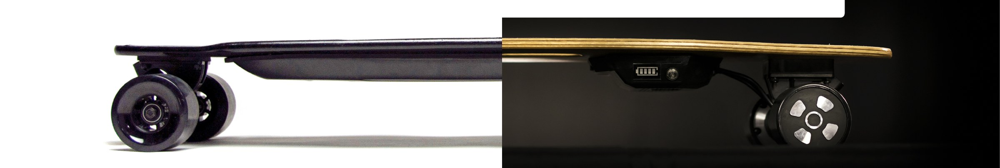
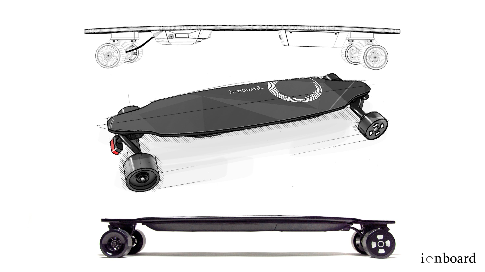